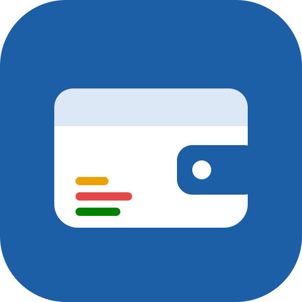

FloussiPolitique de confidentialité
Dernière mise à jour : 22 novembre 2026
En bref : Floussi ne collecte aucune donnée personnelle. Vos comptes et vos opérations restent sur votre appareil. Il n'y a ni compte utilisateur, ni publicité, ni statistiques d'utilisation, ni revente de données.
1. Qui sommes-nous
Floussi est une application de gestion de budget personnel éditée par [NOM DE L'ÉDITEUR]. Pour toute question : [ADRESSE E-MAIL DE CONTACT].
2. Les données que vous saisissez
Les comptes, opérations, catégories, budgets, prêts, notes et réglages que vous saisissez sont enregistrés uniquement dans la mémoire de votre appareil. Ils ne sont jamais envoyés à l'éditeur ni à un serveur. L'éditeur n'y a pas accès et ne peut ni les lire, ni les récupérer, ni les restaurer à votre place.
3. Ce que l'application ne fait pas
- Pas de création de compte, pas d'adresse e-mail ni de numéro de téléphone demandés.
- Pas de publicité et pas de traceurs publicitaires.
- Pas d'outil de mesure d'audience ni de statistiques d'utilisation.
- Pas d'accès à votre localisation, à vos contacts, à vos photos ni à votre micro.
- Pas de connexion à votre banque.
- Aucune vente ni aucun partage de données avec des tiers.
4. Code de verrouillage et Face ID / empreinte
Si vous activez un code, seule une empreinte chiffrée de ce code (et non le code lui-même) est gardée sur votre appareil. Si vous activez Face ID ou l'empreinte digitale, la vérification est faite par le système de votre téléphone : l'application ne reçoit jamais votre visage ni votre empreinte, seulement la réponse « reconnu » ou « non reconnu ».
5. Sauvegardes
Les fichiers de sauvegarde et les exports CSV sont créés uniquement quand vous le demandez. C'est vous qui choisissez où les enregistrer (dans le téléphone, iCloud Drive, Google Drive, e-mail…). Ils sont alors soumis aux règles du service que vous choisissez. Ces fichiers contiennent vos données financières en clair : gardez-les en lieu sûr.
6. Connexions à Internet
Floussi fonctionne hors connexion. Les seules connexions possibles sont techniques et ne contiennent aucune de vos données financières :
- Version web : le site est hébergé par GitHub Pages. Comme pour tout site web, GitHub reçoit l'adresse IP de votre appareil et des informations techniques (type de navigateur) lorsqu'il envoie les fichiers de l'application. Toutes les polices de caractères sont intégrées à l'application : aucun autre site n'est contacté. Voir la politique de confidentialité de GitHub.
- Versions App Store et Google Play : le téléchargement et les mises à jour passent par Apple ou Google, selon leurs propres politiques de confidentialité.
7. Combien de temps les données sont gardées
Vos données restent sur votre appareil tant que vous ne les supprimez pas. Floussi garde aussi, sur l'appareil, une copie de sécurité par jour pendant 10 jours. Pour tout effacer, supprimez l'application, ou effacez les données du site dans les réglages du navigateur pour la version web. Pensez à faire une sauvegarde avant.
8. Vos droits
Comme l'éditeur ne détient aucune donnée vous concernant, il n'y a rien à consulter, corriger ou supprimer chez lui. Vous gardez le contrôle total de vos données dans l'application : modification, export, suppression. Pour toute question sur vos droits (par exemple au titre du RGPD en Europe ou de la loi 09-08 au Maroc), écrivez à [ADRESSE E-MAIL DE CONTACT].
9. Enfants
Floussi ne s'adresse pas spécialement aux enfants et ne collecte aucune donnée, y compris sur les mineurs.
10. Modifications
Si cette politique change, la nouvelle version sera publiée sur cette page avec sa date de mise à jour. Si une future version de l'application devait envoyer des données (par exemple pour une synchronisation entre appareils), cela ne se ferait qu'avec votre accord explicite.
Privacy policy
Last updated: November 22, 2026
In short: Floussi does not collect any personal data. Your accounts and transactions stay on your device. There is no user account, no advertising, no usage analytics and no data selling.
1. Who we are
Floussi is a personal budgeting app published by [PUBLISHER NAME]. For any question: [CONTACT EMAIL].
2. The data you enter
The accounts, transactions, categories, budgets, loans, notes and settings you enter are stored only in your device's storage. They are never sent to the publisher or to any server. The publisher has no access to them and cannot read, recover or restore them for you.
3. What the app does not do
- No sign-up; no email address or phone number requested.
- No advertising and no ad trackers.
- No analytics or usage statistics.
- No access to your location, contacts, photos or microphone.
- No connection to your bank.
- No selling or sharing of data with third parties.
4. Passcode and Face ID / fingerprint
If you turn on a passcode, only an encrypted fingerprint of it (not the code itself) is kept on your device. If you turn on Face ID or fingerprint unlock, the check is done by your phone's operating system: the app never receives your face or fingerprint, only a "recognised" or "not recognised" answer.
5. Backups
Backup files and CSV exports are only created when you ask for them. You choose where to save them (on the phone, iCloud Drive, Google Drive, email…), and they are then subject to that service's rules. These files contain your financial data unencrypted: keep them somewhere safe.
6. Internet connections
Floussi works offline. The only possible connections are technical and contain none of your financial data:
- Web version: the site is hosted on GitHub Pages. As with any website, GitHub receives your device's IP address and technical information (browser type) when it delivers the app's files. All fonts are built into the app: no other website is contacted. See the GitHub privacy statement.
- App Store and Google Play versions: downloads and updates go through Apple or Google, under their own privacy policies.
7. How long data is kept
Your data stays on your device until you delete it. Floussi also keeps one safety copy per day on the device for 10 days. To erase everything, delete the app, or clear the site's data in your browser settings for the web version. Make a backup first.
8. Your rights
Since the publisher holds no data about you, there is nothing to access, correct or delete on its side. You keep full control of your data in the app: edit, export, delete. For any question about your rights (for example under the GDPR in Europe or Law 09-08 in Morocco), write to [CONTACT EMAIL].
9. Children
Floussi is not specifically aimed at children and collects no data, including from minors.
10. Changes
If this policy changes, the new version will be published on this page with its update date. If a future version of the app were to send data (for example to sync between devices), it would only do so with your explicit consent.
سياسة الخصوصية
آخر تحديث: 22 نونبر 2026
باختصار: لا يجمع تطبيق Floussi أي بيانات شخصية. تبقى حساباتك وعملياتك على جهازك. لا يوجد حساب مستخدم، ولا إعلانات، ولا إحصائيات استخدام، ولا بيع للبيانات.
1. من نحن
Floussi تطبيق لتدبير الميزانية الشخصية تنشره [اسم الناشر]. لأي سؤال: [البريد الإلكتروني للتواصل].
2. البيانات التي تُدخلها
الحسابات والعمليات والفئات والميزانيات والقروض والملاحظات والإعدادات التي تُدخلها تُحفظ في ذاكرة جهازك فقط. لا تُرسل أبدًا إلى الناشر ولا إلى أي خادم. لا يمكن للناشر الاطلاع عليها ولا استرجاعها ولا استعادتها نيابةً عنك.
3. ما لا يفعله التطبيق
- لا حاجة لإنشاء حساب، ولا يُطلب بريد إلكتروني أو رقم هاتف.
- لا إعلانات ولا أدوات تتبع إعلانية.
- لا أدوات لقياس الجمهور ولا إحصائيات استخدام.
- لا وصول إلى موقعك أو جهات اتصالك أو صورك أو الميكروفون.
- لا ربط بحسابك البنكي.
- لا بيع ولا مشاركة للبيانات مع أي طرف ثالث.
4. رمز القفل وFace ID أو البصمة
إذا فعّلت رمزًا، لا يُحفظ على جهازك إلا بصمة مشفّرة له وليس الرمز نفسه. وإذا فعّلت Face ID أو بصمة الإصبع، فإن نظام هاتفك هو الذي يقوم بالتحقق: لا يتلقى التطبيق أبدًا صورة وجهك أو بصمتك، بل فقط جواب «تم التعرف» أو «لم يتم التعرف».
5. النسخ الاحتياطية
لا تُنشأ ملفات النسخ الاحتياطي وملفات التصدير CSV إلا بطلب منك. أنت من يختار مكان حفظها (في الهاتف، iCloud Drive، Google Drive، البريد الإلكتروني…)، وتخضع حينها لقواعد الخدمة التي اخترتها. تحتوي هذه الملفات على بياناتك المالية دون تشفير: احفظها في مكان آمن.
6. الاتصال بالإنترنت
يعمل Floussi دون اتصال بالإنترنت. الاتصالات الممكنة تقنية فقط ولا تتضمن أيًّا من بياناتك المالية:
- النسخة على الويب: الموقع مستضاف على GitHub Pages. كما هو الحال مع أي موقع، يتلقى GitHub عنوان IP الخاص بجهازك ومعلومات تقنية (نوع المتصفح) عند إرسال ملفات التطبيق. جميع الخطوط مدمجة في التطبيق: لا يتم الاتصال بأي موقع آخر. راجع سياسة الخصوصية لـ GitHub.
- نسختا App Store وGoogle Play: يمر التنزيل والتحديثات عبر Apple أو Google وفق سياسات الخصوصية الخاصة بهما.
7. مدة الاحتفاظ بالبيانات
تبقى بياناتك على جهازك ما دمت لم تحذفها. ويحتفظ Floussi أيضًا على الجهاز بنسخة أمان واحدة يوميًا لمدة 10 أيام. لحذف كل شيء، احذف التطبيق، أو امسح بيانات الموقع من إعدادات المتصفح بالنسبة لنسخة الويب. احرص على عمل نسخة احتياطية قبل ذلك.
8. حقوقك
بما أن الناشر لا يحتفظ بأي بيانات عنك، فلا يوجد لديه ما يمكن الاطلاع عليه أو تصحيحه أو حذفه. تحتفظ بالتحكم الكامل في بياناتك داخل التطبيق: التعديل والتصدير والحذف. لأي سؤال حول حقوقك (مثلًا بموجب اللائحة العامة لحماية البيانات في أوروبا أو القانون 09-08 في المغرب)، راسل [البريد الإلكتروني للتواصل].
9. الأطفال
Floussi غير موجه خصيصًا للأطفال ولا يجمع أي بيانات، بما في ذلك بيانات القاصرين.
10. التعديلات
إذا تغيّرت هذه السياسة، ستُنشر النسخة الجديدة في هذه الصفحة مع تاريخ تحديثها. وإذا أصبحت نسخة مستقبلية من التطبيق ترسل بيانات (مثلًا للمزامنة بين الأجهزة)، فلن يتم ذلك إلا بموافقتك الصريحة.